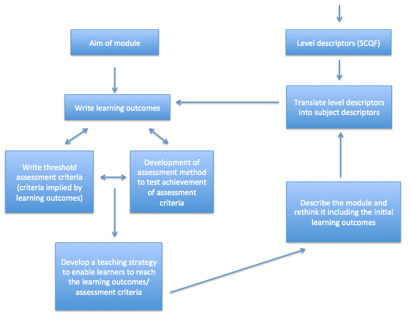

It can be difficult to visualise the design of a module. All too often we don’t make the time to actually think about the underlying design of a module. However, across all disciplines there are core elements every successful module should incorporate.
The module map below provides a useful visual overview of the key stages and relationships in module. Taking the time to design your module will help module teams and module leaders to develop module quality documentation more easily and meaningfully.
